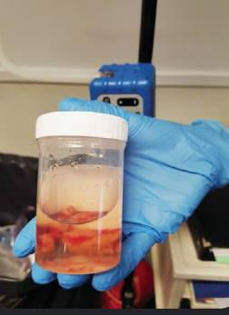
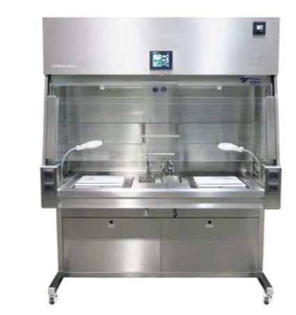
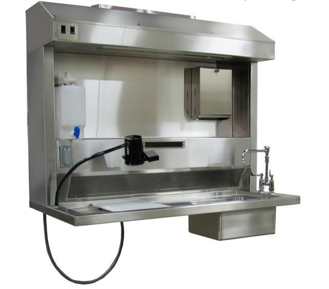
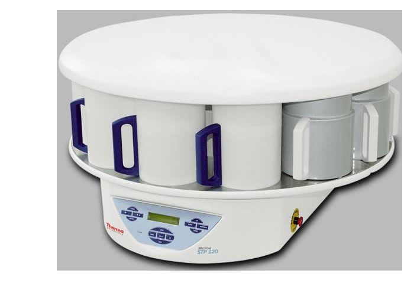
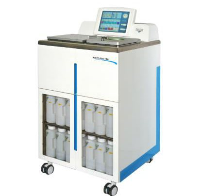
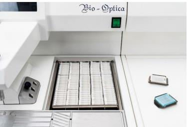

Le laboratoire d'anatomie et cytopathologie
L'anatomopathologie
L'anatomopathologie (« anapath ») examine des tissus ou des cellules prélevés sur un patient pour poser un diagnostic : lésions infectieuses, inflammatoires ou cancéreuses. Elle ne mesure pas des substances dans le sang : elle étudie la morphologie des tissus (histologie) et des cellules (cytologie) pour un diagnostic de certitude. En cancérologie, c'est le pathologiste qui confirme la nature d'une tumeur et guide le traitement (statut HER2 dans le cancer du sein).
Ses missions :
- Diagnostic : nature des lésions (cancers, tumeurs bénignes, inflammations, infections).
- Cytologie : cellules isolées ou liquides (frottis, cytoponction de la thyroïde).
- Histopathologie : tissus après fixation, inclusion en paraffine et coloration.
- Analyses avancées : immunohistochimie, biologie moléculaire (pronostic, traitements ciblés).
Le parcours d'un prélèvement
- Biopsie : petit prélèvement ciblé (aiguille, pince, endoscope) pour poser ou confirmer un diagnostic ; fixation 6 h minimum ; résultat en environ 4 jours.
- Pièce opératoire : organe ou partie d'organe retiré au bloc, avec une marge saine ; elle donne le stade et dit si les bords sont sains ; fixation 24 h ou plus ; résultat en 8 jours ou plus.
- Fixation : immersion immédiate dans le formol tamponné, pour stopper la dégradation.
- Coupe au microtome : 3 à 5 µm, posée sur une lame de verre.
- Coloration H&E (hématoxyline-éosine) : noyaux en bleu-violet, cytoplasme en rose. HES : avec le safran.
- Post-analytique : compte rendu validé par le pathologiste ; archivage des lames et des blocs, et des images numériques.

Quand le H&E ne suffit pas
Pathologie numérique : les lames sont scannées en « lames virtuelles », lues à l'écran, partagées à distance. L'IA quantifie les marqueurs (pourcentage de cellules positives), une tâche longue et variable à l'œil nu.
Les équipements, étape par étape
| Étape | Équipements |
|---|---|
| Réception | étiquetage, impression laser des cassettes |
| Fixation, macroscopie | table de macroscopie, distributeur de formol, armoire ventilée |
| Déshydratation, inclusion | automate d'imprégnation, station d'enrobage, plaque froide |
| Coupe | microtome, cryostat (examen extemporané, tissu congelé pendant l'opération) |
| Coloration | automate de coloration, automate d'IHC, colleuse de lames |
| Lecture, archivage | microscopes, scanners de lames, armoires ventilées |
La table de macroscopie
Un poste de dissection ventilé pour examiner, disséquer et mettre en cassette les pièces et les biopsies. L'air contaminé est aspiré par une grille filtrée, puis rejeté ou recyclé.


- Trois rôles : protection contre les vapeurs (aspiration dorsale ou frontale), sécurité physique (visière en verre Securit), ergonomie (hauteur réglable).
- Composants : hotte et grilles d'aspiration, éclairage, distributeur de formol, table de dissection, évier, porte-instruments magnétique, caméra et loupe, lave-yeux.
- Pompe à formol : commande au pied, membrane résistante au formol, environ 0,5 à 1 L/min, sans toucher les bidons.
- Détecteur de formol : sonde sur la table, alarme sonore et visuelle à 0,5 ppm.
- Station d'imagerie (caméra HD au-dessus du plan) et dictée vocale, mains libres.
- Examen macroscopique : identifier la pièce, la décrire (type, dimensions, poids), surface externe, coupe et description interne, prélever les zones d'intérêt.
Le formol, un agent CMR
Le formol (formaldéhyde) est cancérogène, mutagène, reprotoxique. Prévention à la source, confinement, ventilation.
- VLEP : 0,3 ppm sur 8 h, 0,6 ppm sur 15 min.
- Vitesse de captage d'au moins 0,5 m/s au point le plus éloigné de l'aspiration.
- Captage par le bas ou par un dosseret aspirant ; jamais vers le haut (les vapeurs passeraient devant le visage).
- Air rejeté dehors, ou filtré au charbon actif (ETRAF).
- Pièce en dépression d'au moins −10 Pa.
Maintenance de la table : filtres tous les 6 mois, calibration du détecteur, débit de ventilation, tuyaux, pompe.
| Panne | Cause |
|---|---|
| Aspiration faible | filtre saturé |
| Alarme muette | sonde à remplacer ou mal connectée |
| Pas de lumière | lampe grillée ou alimentation |
| Fuite de liquide | tuyau ou cuve fissurés |
| Pompe inefficace | moteur |
Armoire ventilée : stocke les pièces fixées au formol et les réactifs ; vapeurs aspirées vers le haut et évacuées, ou filtre à charbon actif ; étagères ajourées en inox, bac de rétention. Les armoires anti-feu séparent solvants, acides et bases (NF EN 14470-1).

L'automate de déshydratation et d'imprégnation
Le processeur de tissus prépare les tissus fixés pour l'inclusion en paraffine.
- Carrousel : les paniers de cassettes passent de station en station disposées en cercle (par exemple 10 stations de réactifs de 1,8 L, 2 ou 3 de paraffine chauffées). Le moteur fait monter, descendre, vibrer et tourner les paniers.
- Sous vide à cuve unique : les tissus restent dans une cuve fermée (jusqu'à 200 cassettes) et les liquides y sont pompés tour à tour ; le vide accélère la pénétration. Filtre à charbon actif.


La station d'enrobage
Après l'automate, le technicien met le tissu dans un moule, verse de la paraffine fondue (environ 60 °C) et forme un bloc que le microtome pourra couper. L'automate prépare l'intérieur du tissu ; la station crée le bloc extérieur.


- Réservoir de paraffine filtré (6 L), réglable de 50 à 75 °C, deux capteurs de niveau.
- Distribution par capteur ultrasonique (détecte le moule), manuelle ou à la pédale ; débit réglable.
- Plaque chauffante (aluminium) et plaque froide : −20 °C en 10 min.
- Automatisé : le Tissue-Tek AutoTEC a120 enrobe jusqu'à 120 cassettes par heure, deux fois plus vite qu'à la main ; cassettes Paraform (orientation fixée dès la macroscopie, jusqu'à 44 % d'erreurs en moins), SMARTair, lecteur de codes-barres relié au LIS.
Questions d'examen
Réponds dans ta tête, puis touche « Voir la réponse ».
1. En quoi l'anatomopathologie diffère-t-elle de la biologie clinique ?
Voir la réponse
Elle ne mesure pas des substances dans le sang.
Elle étudie la morphologie des tissus (histologie) et des cellules (cytologie) pour un diagnostic de certitude.
2. Différence entre une biopsie et une pièce opératoire ?
Voir la réponse
Biopsie : petit fragment ciblé, pour poser ou confirmer un diagnostic ; résultat en environ 4 jours.
Pièce opératoire : organe ou partie d'organe retiré au bloc avec une marge saine ; donne le stade et l'état des bords ; 8 jours ou plus.
3. Donne les étapes techniques d'un prélèvement, de la fixation à la lecture.
Voir la réponse
Fixation au formol.
Macroscopie et mise en cassette.
Déshydratation et imprégnation de paraffine.
Enrobage en bloc.
Coupe au microtome (3 à 5 µm).
Coloration.
Lecture au microscope ou au scanner.
4. Que colorent l'hématoxyline et l'éosine ?
Voir la réponse
Hématoxyline : les noyaux, en bleu-violet.
Éosine : le cytoplasme et les structures extracellulaires, en rose.
5. Cite quatre techniques complémentaires au H&E.
Voir la réponse
Immunohistochimie (anticorps : récepteurs hormonaux, HER2).
Hybridation in situ, FISH ou CISH (amplification de HER2, HPV).
Tests moléculaires, PCR et NGS (mutation BRAF V600E).
Colorations spéciales (rouge Congo pour l'amylose, Ziehl-Neelsen pour la tuberculose).
6. Quelles sont les VLEP du formol ? À quel seuil sonne le détecteur de la table ?
Voir la réponse
0,3 ppm sur 8 h.
0,6 ppm sur 15 min.
Alarme à 0,5 ppm.
7. Pourquoi l'aspiration d'une table de macroscopie ne doit-elle pas se faire vers le haut ?
Voir la réponse
Les vapeurs de formol passeraient devant les voies respiratoires du technicien.
On capte par le bas ou par un dosseret aspirant, à au moins 0,5 m/s.
8. L'aspiration de la table faiblit. Cause probable ?
Voir la réponse
Un filtre saturé (filtres à remplacer tous les 6 mois).
9. Quelles sont les trois étapes de l'automate d'imprégnation ?
Voir la réponse
Déshydratation : alcools de concentrations croissantes.
Clarification : xylène ou substitut, miscible à l'alcool et à la paraffine.
Imprégnation : paraffine fondue vers 60 °C, souvent sous vide.
10. Différence entre l'automate d'imprégnation et la station d'enrobage ?
Voir la réponse
L'automate remplace l'eau du tissu par de la paraffine : il prépare l'intérieur du tissu.
La station d'enrobage coule la paraffine autour du tissu dans un moule : elle crée le bloc que coupe le microtome.